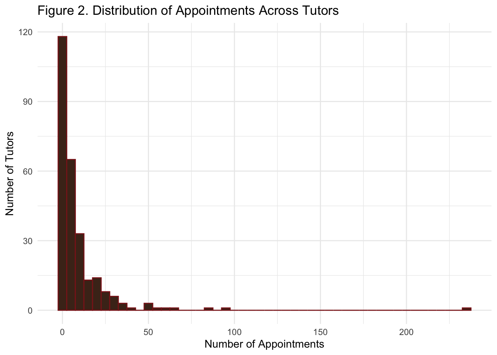
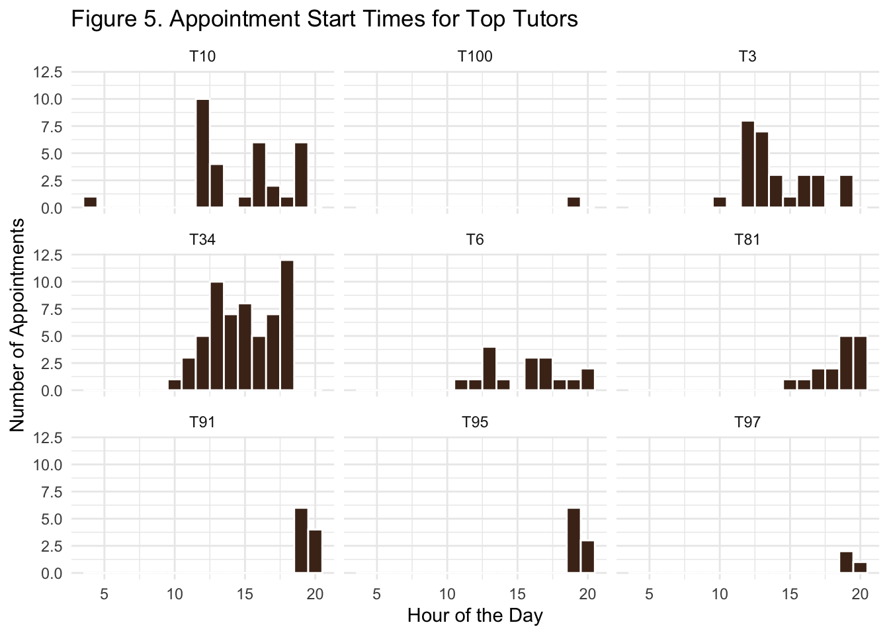
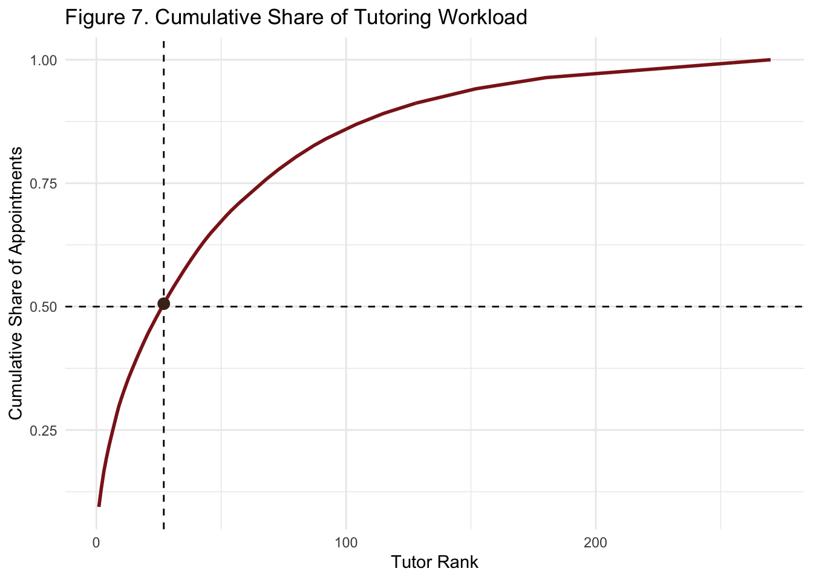
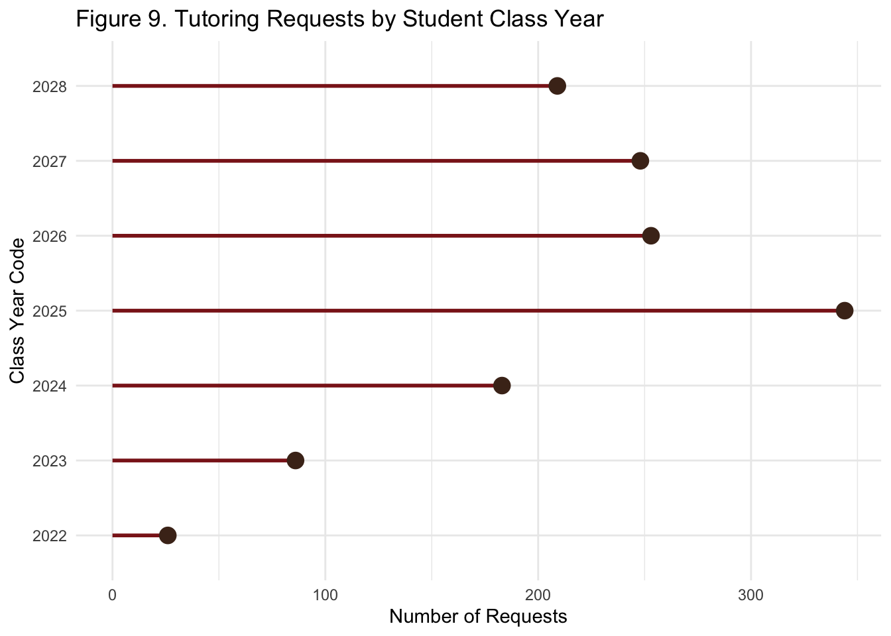
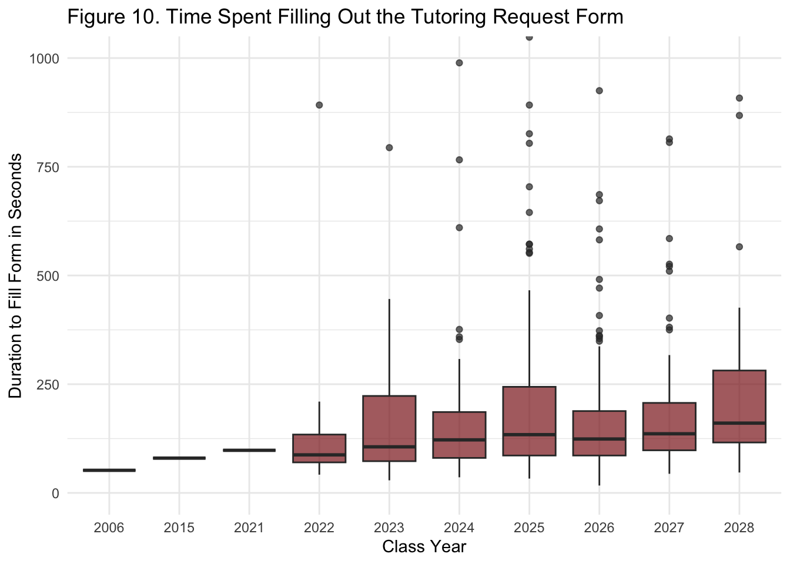

library(tidyverse)
library(readxl)
library(lubridate)
library(plotly)Patterns in Peer Tutoring at St. Lawrence University
Student Worload, Behavior, and Return Patterns
tutoring = read_excel("data/MAIN_DATA.xlsx")
head(tutoring)# A tibble: 6 × 12
Duration to fill form…¹ RecordedDate LocationLatitude LocationLongitude
<dbl> <dttm> <dbl> <dbl>
1 385 2021-08-13 08:08:10 42.9 -78.7
2 164 2021-08-13 08:11:05 42.9 -78.7
3 114 2021-08-24 11:55:10 44.6 -75.2
4 81 2021-08-25 06:29:33 44.6 -75.2
5 989 2021-08-25 08:23:14 44.6 -75.2
6 97 2021-08-25 12:37:12 44.6 -75.2
# ℹ abbreviated name: ¹`Duration to fill form (in seconds)`
# ℹ 8 more variables: Class <chr>, Professor <chr>, COURSE <chr>,
# `Tutor Id` <chr>, `Student id` <chr>, Class_Year_Code <chr>,
# `Appointment Start Time` <chr>, `Appointment End Time` <chr>tutoring = tutoring |>
mutate(
start_time = parse_date_time(`Appointment Start Time`, orders = "I:M p"),
end_time = parse_date_time(`Appointment End Time`, orders= "I:M p"),
appointment_minutes = as.numeric(end_time - start_time, units = "mins"),
start_hour = hour(start_time)
)scarlet = "#8B1E1E"
brown = "#4B2E1E"Abstract
This project is an analysis of the full dataset peer tutoring appointment records from St. Lawrence University to understand how students use tutoring labor is distributed across tutors. The original data set contained identifying information, tutor and student names were anonymized into ID values while still making sure it saved the repeated interactions. This project is organized around two main perspectives: the tutor perspective and the student requesting perspective. From the tutor point of view, the main findings show that tutoring work is concentrated among a smaller group of tutors, most active tutors tend to specialize in certain subject areas, and students in specific courses have students returning to them more than once. From the student side, the results exposed that tutoring varies across class years, the request form is quickly and easy, and generally students return to the same tutor for the same class. A logistic regression model suggested that appointment time is related to smae tutor return behavior, and later appointments being related with lower likelihood of returning to the same tutor. Overall, this project shows that peer tutoring is shaped by tutor workload, subject demand, student-tutor relationships and scheduling.
Introduction
Peer tutoring is an important accdemic support resource bwcause it provides students access to personalized peer-to-peer support outside of class. However, the appointment data can reveal more than just who or how many students use the program. It can also show workload distribution, which subjects create the most repeated demand, tendencies on time to set appointments, and whether students return to the same tutor over time.
This dataset was provided by the Director of the St. Lawrence University Peer Tutoring program since 2021. The data contains anonymized tutor and student ID’s, course information, appointment start and end times, location coordinates, request form completion duration, and class year code. The class year code representsthe students entry year, so I converted it into graduation year by adding four years. Course information was grouped to overall subject areas such as Statistics, Chemistry, Biology, Economics, Mathematics and Computer Science, making the visuals and overall analysis easier to interpret.
The project answers two broad questions. First, from the tutor perspective: How is tutoring workload distributed, and do students return to the same tutors?. Second, from the student perspective: who is requesting tutoring, how efficient is the request process, and what patterns appear in repeated student behavior? Together, these questions help tell a story about peer tutoring as an academic support, not only appointments and student workers.
Tutor Perspective
Tutor worload
The first question is whether tutoring appointments are evenly distributed across tutors. If only few tutors complete a large number of sessions, then the programs may depend heavily on those tutors.
top_tutors = tutoring |>
group_by(`Tutor Id`)|>
summarise(total_appointments = n()) |>
arrange(desc(total_appointments)) |>
slice(1:10)
figure1 = ggplot(top_tutors,
aes(x = reorder(`Tutor Id`, total_appointments),
y = total_appointments,
text = paste("Appointments: ", total_appointments))) +
geom_col(fill = scarlet)+
coord_flip() +
labs(
title = "Figure 1. Top Tutors by Number of Appointments",
x = "Tutor ID",
y = "Number of Appointments"
) +
theme_minimal()
ggplotly(figure1, tooltip = "text")Figure 1 shows the distribution of tutoring appointments among the top 10 tutors in the program. The pattern is clearly uneven. Ttutor T97 stands out as higher number of appointments compared to all others, while the remaining tutors show a gradual decline in workload.
This figure shows that there is a concentration of demand amoint a smaller subset of tutors, lacking a balanced system of appointments were spread relatively equally. This is hinting that certain tutors play a larger role in taking care of the demand of the program.
This also shows that some tutors accumulate for appointments than others. Another explanation could be student preference, or the tutor promoted his services through the program or more availability compared to the others.
This finding is huge. Small number of tutors are responsible for a large share of appointments, the program may be vulnerable to overload and burnout for those specific tutors. It shows this is an opportunity to expand the tutor coverage in high demand subjects or creatign a system to distribute appointments.
figure2 = tutoring |>
group_by(`Tutor Id`) |>
summarise(total_appointments = n()) |>
ggplot(aes(x = total_appointments)) +
geom_histogram(binwidth = 5, fill = brown, color = scarlet) +
labs(
title = "Figure 2. Distribution of Appointments Across Tutors",
x = "Number of Appointments",
y = "Number of Tutors"
) +
theme_minimal()
figure2
Figure 2 provides a broader view in the way tutoring appointments are distributed across all tutors in the data set. This histogram shows a distribution of total appointment counts, showing a highly skewed pattern.
Most tutors appear on the left side of the distribution, meaning they take care of a small number of appointments. Only a small number of tutors are in the right side, meaning they take a large number of appointments. The long tail shows few tutors manage large number of appointments, and the much majority of our hired tutors contribute much less to satisfy the demand.
We can conclude there is unused capacity among tutors with few or zero appointments, while high demand tutors experience heavier workloads. Leading to potential inefficiency in our tutor-student matching.
Tutor specialization
I grouped course names into broader subject areas. This makes it easier to observe if the top tutors are just in general or if they specialize in specific academic areas.
tutoring = tutoring |>
mutate(
course_combined = if_else(is.na(COURSE), Class, COURSE)) |>
mutate(
course_group = case_when(
is.na(course_combined)~"Missing",
str_detect(course_combined, "STAT|Stat|stat") ~ "Statistics",
str_detect(course_combined, "CHEM|Chem|chem") ~ "Chemistry",
str_detect(course_combined, "BIO|Bio|bio") ~ "Biology",
str_detect(course_combined,"ECON|Econ|econ|Financial Accounting|ACC 203 Financial Accounting") ~ "Economics",
str_detect(course_combined,"PSYC|Psyc|psyc") ~ "Psychology",
str_detect(course_combined,"PHYS|Phys|phys") ~ "Physics",
str_detect(course_combined,"MATH|Math|math|Calculus 1|Calculus 2|Multivariable Calculus")~ "Mathematics",
str_detect(course_combined,"CS|Computer|cs") ~ "Computer Science",
str_detect(course_combined,"SPAN|Spanish|spanish") ~ "Spanish",
str_detect(course_combined,"SSES|Environment|General Ecology") ~ "Environmental Sciences",
str_detect(course_combined,"PHIL|philosophy") ~ "Philosophy",
str_detect(course_combined,"GER|German") ~ "German",
str_detect(course_combined,"FREN|French|FR") ~ "French",
str_detect(course_combined,"GOVT") ~ "Government",
TRUE~"Other"
)
)
tutoring |>
filter(course_group == "Other") |>
group_by(if_else(is.na(COURSE), Class, COURSE))|>
summarise(total = n())|>
arrange(desc(total))|>
slice(1:30)# A tibble: 30 × 2
`if_else(is.na(COURSE), Class, COURSE)` total
<chr> <int>
1 Other (provide in next question) 21
2 Study Skills 5
3 Symbolic Logic 3
4 Accounting 203 2
5 Advanced Neuroscience 2
6 Calc 2 2
7 Chinese 103 2
8 Chinese 104 2
9 ENVS 101 2
10 Managerial Accounting 2
# ℹ 20 more rows# Remove "Missing- 1101" which are students that didnt add anything
tutor_specialization = tutoring |>
filter(course_group != "Missing",
course_group != "Other",
`Tutor Id` %in% top_tutors$`Tutor Id`)|>
group_by(`Tutor Id`, course_group) |>
summarise(total = n(), .groups = "drop") |>
ungroup()
tutor_order = top_tutors|>
pull(`Tutor Id`)
course_order = tutor_specialization|>
group_by(course_group)|>
summarise(total_subject = sum(total))|>
arrange(desc(total_subject))|>
pull(course_group)
tutor_specialization = tutor_specialization |>
mutate(
`Tutor Id` = factor(`Tutor Id`, levels = tutor_order),
course_group=factor(course_group, levels = course_order)
)figure3 = ggplot(tutor_specialization,
aes(x=`Tutor Id`, y= course_group, fill = total,
text = paste("Tutor: ", `Tutor Id`,
"Subject: ", course_group,
"Appointments: ", total)))+
geom_tile( color = "white", linewidth = 0.4)+
scale_fill_viridis_c()+
labs(
title = "Figure 3. Tutor Specialization Across Subject Areas",
x = "Tutor Id",
y = "Course Group",
fill = "Appointments"
)+
theme_minimal()
ggplotly(figure3, tooltip = "text")Figure 3 shows the tutoring demand is distributed across subject areas for the top tutors, revealing a clear pattern of specialization. Each column represents a tutor, each row represents a subject area, and the color intensity indicates the number of appointments.
Ttutors tend to specialize in specific subject areas. For example tutors like T97 and T10 show high concentrations in Statistics and Chemistry. The other subject areas show minimal activity for the same tutors.
Student demand is strongly tied to subject expertise. Students get matched with tutors who are associated to specific courses, helping explain the patterns from Figure 1 and Figure 2. Not all subjects are equally represented across tutors. Some subjects are more represented than others.
Appointment times
Another questions is when tutoring appointments usually happen. Time comes to be important because students have to fit tutoring around classes, work, extracurriculars and other commitments.
figure4 = ggplot(tutoring, aes(x = start_hour))+
geom_histogram(binwidth = 1, fill = scarlet, color = "white")+
labs(
title = "Figure 4. Distribution of Appointment Start Times",
x = "Hour of the Day",
y = "Number of Appointments"
)+
theme_minimal()
ggplotly(figure4)Figure 4 shows the distribution of tutoring appointment start times throughout the day, revealing a clear pattern in student demand and availability. Sessions are heavily concentrated in the afternoon and early evening hours, with a peak at 4:00 P.M.
The highest levels between 2:00 P.M and 6:00 P.M. After this peak, demand declines as it get later in the night. Peak tinme is usually a students free time right after classes.
Demand is not evenly distributed throughout the day. There is a clear window of meeting times.This pattern can come into use for a future opportunity to get a place in an academic building only for peer tutoring.
figure5 = tutoring |>
filter(`Tutor Id` %in% top_tutors$`Tutor Id`,
!is.na(start_hour))|>
ggplot(aes(x = start_hour))+
geom_histogram(binwidth = 1, fill = brown, color = "white")+
facet_wrap(~`Tutor Id`)+
labs(
title = "Figure 5. Appointment Start Times for Top Tutors",
x = "Hour of the Day",
y= "Number of Appointments"
) +
theme_minimal()
figure5
tutoring |>
filter(`Tutor Id` %in% top_tutors$`Tutor Id`)|>
group_by(`Tutor Id`)|>
summarise(
total_rows = n(),
non_missing_times = sum(!is.na(start_hour))
)# A tibble: 10 × 3
`Tutor Id` total_rows non_missing_times
<chr> <int> <int>
1 T10 83 31
2 T100 51 1
3 T166 59 0
4 T3 39 29
5 T34 66 58
6 T6 51 17
7 T81 53 16
8 T91 95 10
9 T95 48 9
10 T97 234 3Focusing more on the top tutors. This figure reveals how demand is distributed across tutors. A clear pattern is shown, top tutors operate in the afternoon, just like the majority, but there are some interesting points to discuss. Tutors T91, T95 and T97 have concentrated times exclusively around 6-8PM. But other tutors show a broader distribution of hours. This shows that even though there are some popular trends on time, not all tutors are equally present at those times. Nevertheless, tutor availability do take a critical role in shaping meeting times and also partly driven by scheduling constraints.
Students returning to the same tutor
Return behavior is one of the most meaningful parts of this project. When a student returns to the same tutor more than once, suggesting trust, convenience, popularity or just preference.
same_tutor = tutoring |>
group_by(`Student id`, `Tutor Id`) |>
summarise(visits_tutor = n()) |>
filter(visits_tutor > 1) |>
group_by(`Tutor Id`) |>
summarise(
same_return = n())|>
arrange(desc(same_return))
same_tutor# A tibble: 105 × 2
`Tutor Id` same_return
<chr> <int>
1 T97 11
2 T81 4
3 T100 3
4 T10 2
5 T110 2
6 T22 2
7 T34 2
8 T91 2
9 T95 2
10 T105 1
# ℹ 95 more rowsfigure6 = same_tutor|>
filter(`Tutor Id` %in% top_tutors$`Tutor Id`)|>
ggplot(aes(x = reorder(`Tutor Id`, same_return),
y = same_return,
text = paste("Tutor: ", `Tutor Id`,
"Returning students: ", same_return)))+
geom_col(fill=scarlet)+
coord_flip()+
labs(title = "Figure 6. Students Who Returned to the Same Tutor",
x = "Tutor Id",
y = "Number of Students")+
theme_minimal()
ggplotly(figure6, tooltip = "text")Figure 6 gives an insight of student satisfaction and tutor effectiveness. A clear standout is Tutor T97, who had 11 returning students, significally exceeding all other tutors. A main takeaway of this is that not all tutors generate the same level of student loyalty, but at the same type high usage does not automatically translate to high retention.
Returning behavior is clearly not evenly distributing across tutors. We can observe that some tutors create stronger relationships or learning outcomes with their students. Demand concentration on certain tutors its not only based on their time or subject but also on student preference and trust.
Workload concentration
#cumsum function found in chapter 8 - refine your plot is in our data viz book
tutor_workload = tutoring |>
group_by(`Tutor Id`) |>
summarise(total_appointments = n())|>
arrange(desc(total_appointments))
tutor_workload = tutor_workload |>
mutate(
cum = cumsum(total_appointments)/sum(total_appointments),
tutor_rank = row_number()
)
cutoff50 = tutor_workload|>
filter(cum >+0.5) |>
slice(1)
figure7 = ggplot(tutor_workload,
aes(x=tutor_rank, y = cum))+
geom_line(color = scarlet, linewidth = 1)+
geom_hline(yintercept = 0.5, linetype = "dashed")+
geom_vline(xintercept = cutoff50$tutor_rank, linetype = "dashed")+
geom_point(data = cutoff50,
aes(x = tutor_rank, y =cum),
size = 3,
color = brown)+
labs(
title = "Figure 7. Cumulative Share of Tutoring Workload",
x = "Tutor Rank",
y = "Cumulative Share of Appointments")+
theme_minimal()
figure7
This figure reveals a clear and important way tutoring deman is distributed. It is not evenly shared, the curse rises steeply at the beginning, showing that a small number of tutors is taking care of a large number of appointments. The dashes lines highlight the first first group of highest ranked tutors responsible for 50% of the total peer tutoring activity. After that the curve flattens, meaning that the other tutors hired have a smaller contribution to the overall workload.
This uncovers some inefficiency in hiring and matching within the program. Eatleir figures showed differences in the tutor workload, return students and specialization, this graph ties the observations by quantifying yhe concentration of demand. It implies that students trust the program and some of their tutors they get matched on. Nevertheless, for a fair distribution of work, more tutors of those popular specializations should be hired.
Student Perspective
Class Year Usage
tutoring = tutoring |>
mutate(Class_Year_Code =as.numeric(Class_Year_Code))
tutoring = tutoring |>
filter(!is.na(Class_Year_Code))
tutoring = tutoring |>
mutate( grad_year = Class_Year_Code + 4)
class_year = tutoring |>
group_by(grad_year)|>
summarise(total_requests = n())|>
filter(total_requests >10)|>
arrange(grad_year)
figure9 = ggplot(class_year, aes(x=as.factor(grad_year), y=total_requests))+
geom_segment(aes(x = as.factor(grad_year), xend = as.factor(grad_year), y = 0, yend = total_requests), color = scarlet, linewidth = 1)+
geom_point(size = 4, color = brown)+
labs(
title = "Figure 9. Tutoring Requests by Student Class Year",
x = "Class Year Code",
y = "Number of Requests")+
theme_minimal()+
coord_flip()
figure9
This figure our perspective from tutors to who is actually using the tutoring system, revealing a pattern across student class years. The highest number requests comes from the class of 2025, followed closely by 2026 and 2027, while earlier cohorts such as 2022 and 2023 showing significant lower engagement. This visualization reflects a combination of external factors, including timing of data collection, exposure of the program and broader context. Class of 2025 may appear dominant because they were actively enrolled during the peak period from the dataset, while other class years like 2022 or 2023, had already graduated or had li9mited interactions with the system.
In addition, some other factors like COVID-19, shifts to remote learning, and changes in peer tutoring services like access or advertisement may have affected engagement patterns. Students who were underclassmen may have had different levels of awareness or reliance on tutoring resources. We can say that the variation across class years is likely because of differences in access visibility, and St. Lawrence University’s conditions over-time.
Duration to fill out the form
tutor_sec = tutoring |>
filter(`Duration to fill form (in seconds)`<=2000)
figure10 = ggplot(tutoring, aes(x = as.factor(grad_year),
y = `Duration to fill form (in seconds)`))+
geom_boxplot(fill = scarlet, alpha = 0.7) +
coord_cartesian(ylim = c(0, 1000))+
labs(
title = "Figure 10. Time Spent Filling Out the Tutoring Request Form",
x = "Class Year",
y = "Duration to Fill Form in Seconds")+
theme_minimal()
figure10
Figure 10 evaluates how easy it is for students to request a tutor from our program by examining the time spent completing the request from across class years. The median times stay within few minutes, suggesting the system is accessible and not a major barrier to request. However, there is a clear difference across the years, specially on the most recent class years from 2024 to 2028, where the values are spread and the higher outliers increase. Some students take longer, indicating some frictions in the form.
Taking longer in filling in the request form does not strictly mean a change in the behavior of students, but more likely reflects a change in the form itself over time, like added questions, or different format or change in how information is collected. A takeaway is that user experience of requesting tutors is not constant, and may have become more complex through time. As Assistant Director from the program, this is an opportunity to make the form more simple, reduce unnecessary input, or standardize the process could potentially make it more accessible and efficient, this would encourage broader usage.
Returning behavior: same course and same tutor
stu_return = tutoring |>
group_by(`Student id`, course_group, `Tutor Id`)|>
summarise(visit_sameCT = n())|>
filter(visit_sameCT>1)
stu_return_summary = stu_return |>
group_by(course_group)|>
summarise(total_sameCT = n())|>
arrange(desc(total_sameCT))
figure11 = stu_return_summary |>
ggplot(aes(x = reorder(course_group, total_sameCT),
y = total_sameCT,
fill = total_sameCT,
text = paste("Subject: ", course_group,
"Repeat pairings: ", total_sameCT)))+
geom_col()+
coord_flip()+
scale_fill_viridis_c() +
labs(
title = "Figure 11.Repeated Same Course and Same Tutor Returns by Subject",
x = "Subject Area",
y = "Number of Repeat Student-Tutor Pairings",
fill = "Returns"
)+
theme_minimal()
ggplotly(figure11, tooltip = "text")Figure 11 shows the repeated interactions where students return to the same tutor for the same course, broken down by subject area. Biology, Chemistry and Statistics had the highest number of repeat pairings, while others have a low count. This suggests that certain disciplines and students are more likely to build ongoing relationships with tutors, potentially due to the nature of these subjects. The absolute number is small across all categories, with highest value being three of repeat pairings.
The low counts made it hard to draw strong conclusions on the systematic behavior, and the differences may be because of the sample size instead of a real meaningful pattern. This visualization supports the idea that students form a relationship with their tutors based on specific subjects. This also highlights a limitation of the dataset, we can observe a repeated behavior, but there is not enough volume to confidently generalize trends. The future of data collection for our program is necessary to understand student loyalty patterns within specific academic areas.
Logistic Regression Model: Predicting Same-Tutor Return
return_data = tutoring |>
group_by(`Student id`, `Tutor Id`)|>
summarise(visits = n())|>
mutate(return_same_t = if_else(visits > 1, 1,0))
model_data = tutoring |>
left_join(return_data, by = c("Student id", "Tutor Id"))
model_data = model_data|>
filter(!is.na(start_hour),
!is.na(course_group))
model = glm(return_same_t~ start_hour + course_group,
data = model_data,
family = "binomial")
summary(model)
Call:
glm(formula = return_same_t ~ start_hour + course_group, family = "binomial",
data = model_data)
Coefficients:
Estimate Std. Error z value Pr(>|z|)
(Intercept) 0.01333 1.35579 0.010 0.9922
start_hour -0.19174 0.09161 -2.093 0.0363 *
course_groupChemistry -0.34111 0.57842 -0.590 0.5554
course_groupComputer Science -17.56632 3880.66579 -0.005 0.9964
course_groupEconomics -0.53287 0.75081 -0.710 0.4779
course_groupEnvironmental Sciences -17.51154 7238.39322 -0.002 0.9981
course_groupFrench -17.54058 3916.96932 -0.004 0.9964
course_groupGerman -17.57322 8777.32836 -0.002 0.9984
course_groupGovernment -17.62032 8712.23669 -0.002 0.9984
course_groupMathematics -0.22504 1.13065 -0.199 0.8422
course_groupOther -0.64412 0.85776 -0.751 0.4527
course_groupPhilosophy -17.99117 5801.41262 -0.003 0.9975
course_groupPhysics -1.17829 1.11422 -1.057 0.2903
course_groupPsychology -17.85988 3473.69114 -0.005 0.9959
course_groupSpanish -17.69227 3643.37129 -0.005 0.9961
course_groupStatistics -17.74422 2117.86751 -0.008 0.9933
---
Signif. codes: 0 '***' 0.001 '**' 0.01 '*' 0.05 '.' 0.1 ' ' 1
(Dispersion parameter for binomial family taken to be 1)
Null deviance: 190.02 on 722 degrees of freedom
Residual deviance: 171.18 on 707 degrees of freedom
AIC: 203.18
Number of Fisher Scoring iterations: 19\[ \ln\left(\frac{\hat{p}}{1-\hat{p}}\right) = 0.01333 - 0.19174(\text{start\_hour}) + \sum \beta_j(\text{course\_group}_j) \]
The coefficient for start_hour is negative (-0.19174) and statistically significant, indicating that appointment times is important in return behavior. As the appointment time increases by one hour, the log-odds of a student returning to the same tutor decrease.
\[ e^{-0.19174} \approx 0.825 \]
For every one hour increase in appointment time, the odds of a student returning to the same tutor decrease by approximately 17.5%. Earlier appointments are more likely to lead to repeat student-tutor interactions, while later appointments are less likely to result in another appointment.
The course group variables are not statistically significant and some have extremely large standard errors. This suggests that there is not enough data within certain subjects.
Conclusion and Future Work
This project set out to answer two main questions. The results show that tutoring workload is not evenly distributed. A small number of tutors account for a large share of all appointments, meaning the peer tutoring program relies heavily on specific tutors. This balance is connected to subject specialization and student demand, and specific disciplines depend heavily on a few tutors. In some cases, students to return to same tutors.
From student perspective, tutoring is shaped by timing, access, and context. Different class years show different levels of engagement, showing not only academic need but also advertising of the program, enrollment, and overall conditions such as changes in learning environment. The request process is efficient, but making the form more simple it would reduce barriers to access. The logistic regression model shows that appointment timing matters, later appointments is associated with lower likelihood of students returning to the same tutor. Scheduling is a key factor for making a relationship.
With the findings of this project, we can conclude that the peer tutoring profram is shaped by four main elements:
- Demand concentration in a small group of tutors.
- Subject specific imbalances in tutor coverege
- Student behavior and repeated interactions
- Appointment times
These insights are extremely useful to improve the Peer Ttutoring Program. Understanding workload to recruit tutors in high demand subjects and prevent over reliance on a few individuals. Telling tutors during training about those key time windows for appointments. Identifying student engagement to promote outreach in underrepresented class years.
There are some limitations. Location data does not capture which acdemic buildings appointments usually take place, appontment times have missing values, and course group effects are hard to estimate due to small sample sizes. As a result some findings, like our regression model, can be interpreted as exploratory rather than definite results.
Future work could expland this research in multiple meaningful ways. First, improving our data collection. Be more precise with the location data, so we can understand tutoring spaces across campus. Second, incorporating a student evaluation for satisfaction that is imperative after every meeting, to gain a deeper insight in returning students to the same tutor. Third, analyzinf tutoring demand over time, such as across weeks during the semester, revealing patters through exams season or just at random points of the semester. This information could be valuable to share to our new hires so they have an expectation of the workload. Finally, building a live and interactive dashboard, allowing the Director of the porgram to explore patterns and making the findings more actionable.
In conclusion, this project shows that peer tutoring is not just a support service, is a program created for students and shaped by students, their behavior, demand and structure. Understanding these patterns will help the program move toward a more equitable and efficient model supporting both tutors and students.